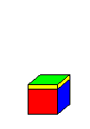

|  |
Many years ago I read some interesting articles in a British school mathematics journal about the various patterns that can be found in the decimal expansions of repeating decimal forms of certain rational numbers [aka fractions]. So I began my own investigation of this topic to see what I could discover on my own. Below I will try to explain what I found. I hope you find it interesting, too.
| 7ths |
We begin with the first truly interesting case: 1/7. When we divide 1 by 7, we obtain the following repeating decimal pattern:
1 --- = 0.142857142857142857... 7The repeating group of six digits 142857 is called the period or repetend of the decimal form of the faction. It is a nontrivial fact -- as will be seen later -- that of the ten digits, only the multiples of 3 are missing: 3, 6, 9, and 0. [For convenience, 0 will be considered a multiple of 3 in this work.]
As was pointed out in the page of Special Numbers, this 6-digit period manifests some unique sums if it is separated into appropriate halves and thirds.
Separate it into two halves, and then add.
142857 142 + 857 = 999Next split it into thirds before adding.
142857 14 + 28 + 57 = 99
Now we will do a "skip counting" sort of separation, or better said "look at the sum of the digits in the odd positions vs. the sum of the digits in the even positions." Note:
142857: 1 + 2 + 5 = 8 4 + 8 + 7 = 19
Nothing there, you say? Perhaps so, but in this case we need to wait until we do the 13ths to see the significance of it.
Here I show something I call the "N-sequence". N stands for numerator. Recall that when you compute the decimal respresentations for the sequence of fractions -- 2/7, 3/7, ..., 6/7 -- you merely obtain the same six digit period, just beginning in a different position. I will show it for 2/7, and you can do the others yourself.
2 --- = 0.285714285714285714... 7
Again we see a 6-digit period (285714) which is our original case just starting two digits later in the expansion. If we compute the other four fractions the same phenomenon appears.
Now we have a sequence of six fractions and their period numbers. Each fraction's numerator is a number from 1 to 6, and each period has a different "initial" digit. If we replace the digits of the basic period for 1/7 with the corresponding numerator digit, we can form a sequence of "numerators", hence the "N-sequence" in this fashion:
Period: 1 4 2 8 5 7 Numerators: 1 3 2 6 4 5
If we perform the "split-half addition" operation on our new sequence, we get this:
132645 132 + 645 = 777Wow! All 7's, just what our denominators are.
Let's do the odd-even "skip counting" operation again, and observe what happens this time:
132645: 1 + 2 + 4 = 7 3 + 6 + 5 = 14
Hmmm, the sums are 7 and the double of 7. That's sorta nice, if you think about it.
| 13ths |
Now let's proceed to the next fraction with an interesting decimal form, namely 1/13.
1 ---- = 0.076923076923076923... 13
Right away there are some big differences. One is that all the missing multiples of 3 from the 1/7 case are now present here. Another difference is that while the period for 7ths had 6 digits (7 - 1 = 6), one could have expected that 13ths would have a 12-digit period (13 - 1 = 12); but it didn't turn out that way. [As you will see later, it does indeed happen for other cases.] As the song says, "Qué será, será".
What about the split-half and split-thirds patterns, I hope you are beginning to ask. You'll be pleased to know it still happens in the expected way:
Two halves:
076923 076 + 923 = 999Three thirds:
076923 07 + 69 + 23 = 99
Interestingly, thirteenths behave differently than the 7ths as regards the sequence of the next eleven fractions: 2/13, 3/13, 4/13, ..., 12/13. The first difference occurs when we find the decimal form for 2/13. Unlike the case of 2/7, this one produces a new set of six digits (rather than a rearrangement of the first period).
2 ---- = 0.153846153846153846... 13
But, there is still some good news here anyway. First, the split-half and split-thirds properties are retained. (I'll let you write out the steps this time.) And if we realize that we now have another six digits, this gives us 12 digits for our discussion; and the idea of 13 - 1 is encountered here afterall. In fact, if we do a "head count" of the digits present in these two periods taken as a pair, we find that every digit appears, AND 3 and 6 appear twice! Note that 3 + 6 = 9.
Remember that seemingly useless oddity of the odd-even skip- counting that resulted in the sums of 8 and 19 for the 7ths period? Well, guess what? IT'S BACK!! See?
076923: 0 + 6 + 2 = 8 7 + 9 + 3 = 19 153846: 1 + 3 + 4 = 8 5 + 8 + 6 = 19
(Perhaps now it would be fitting to observe that the sum of 8 and 19 is 27, the triple of 9.)
Are you now "getting the hang of it"? So, what about that thing called the "N-sequence"? We need to do a little dividing first; but I'll let you do that this time. It's not hard at all if you use a calculator. We do have two periods this time, so you do have to be a little careful. But in the end you should agree with what is given next.
Period: 0 7 6 9 2 3 Numerators: 1 10 9 12 3 4 Period: 1 5 3 8 4 6 Numerators: 2 7 5 11 6 8
Doing the odd-even skip-count operation here produces these interesting sums:
1 + 9 + 3 = 13 and 10 + 12 + 4 = 26 2 + 5 + 6 = 13 and 7 + 11 + 8 = 26
(Do I need to direct your attention to the fact that 13 was our denominator this time, and 26 is the double of 13?)
| 17ths |
We'll do one more fraction, 1/17, in this page. Because after all this work, you should be getting the general idea. And it would be good for you to try it out yourself on other larger fractions.
1
---- = 0.05882352941176470588235294117647...
17
Ah, now there is a period worthy of the name PERIOD! It has -- count 'em -- 16 digits! And 16 is 17 - 1. Here we have another case like 7ths, where the period length is one less than the denominator being used. And also, like 7ths, we only have one period to concern us. So now the periods for 2/17, 3/17, ..., 16/17 have the same digits, just starting at different positions.
If we "call the roll" of the digits present, the six digits we had in the 7ths period (1, 4, 2, 8, 5, 7) all answer twice, whereas the multiples of 3 (0, 3, 6, 9) each occur exactly once. [Keep this sort of thing in mind as you later investigate larger periods.]
While the period seems to be a mixed-up, mumble-jumble of digits in no particular order, there are structure and patterns here as well. For instance our old friend, the split-half property again produces a sum consisting of sixteen 9's. However, as 16 is not divisible by 3, the split-thirds property isn't applicable here. But what about split-fourths? Let's look at it.
0588235294117647 0588 + 2352 + 9411 + 7647 = 19998
Not quite all 9's there, but there are three and the digits at the beginning and end do add up to 9. It's something anyway.
Let's move along to our other pattern structures, like the odd-even skip-count one.
0 8 2 5 9 1 7 4 <--- sum is 36
5 8 3 2 4 1 6 7 <--- sum is 36
(And 36 is the quadruple of 9.)
Because we have 16 digits in our period, we might wonder what happens if we count every fourth digit before finding sums. Here's what happens:
Recalling the famous topic of Magic Squares and that a popular size is the the 4-by-4 square inspired me to wonder what would show up if I placed the digits of this period in a 4-by-4 array, then added up the rows, columns and diagonals. I was pleasantly surprised, as I hope you will be, too.0 2 9 7 <--- sum is 18 5 3 4 6 <--- sum is 18 (And 18 is the 8 5 1 4 <--- sum is 18 double of 9.) 8 2 1 7 <--- sum is 18
. 24 0 5 8 8 21 2 3 5 2 12 9 4 1 1 15 7 6 4 7 24 18 18 18 18 11
The four column totals of 18 are not unexpected as we just saw that in the previous comment. But look at those row totals. They seem to be nothing more than some multiples of 3. But a closer examination will prove otherwise.
21 = 3 x 7 12 = 3 x 4 15 = 3 x 5 24 = 3 x 8
And the sequence of the 3's co-factors -- 7, 4, 5, 8 -- can be seen in the chart in the lower-left-to-upper-right diagonal, in that same order!
The main 4-term diagonals don't seem to provide anything of interest, but the "1-3 broken diagonals" do. Observe:
0 5 8 8 8 0 5 8 8 5 2 3 5 2 2 2 3 5 2 5 9 4 1 1 4 9 4 1 1 1 7 6 4 7 4 7 6 4 7 7 18 18 0 5 8 8 0 0 5 8 8 8 2 3 5 2 2 2 3 5 2 3 9 4 1 1 1 9 4 1 1 9 7 6 4 7 6 7 6 4 7 7 9 27
Finally, let's examine the N-sequence for our 16-digit period.
Period: 0 5 8 8 2 3 5 2 9 4 1 1 7 6 4 7 Numerators: 1 10 15 14 4 6 9 5 16 7 2 3 13 11 8 12
Using the odd-even skip-count pattern brings these sums:
1 15 4 9 16 2 13 8 <-- S = 68 10 14 6 5 7 3 11 12 <-- S = 68
Guess what? 68 is the quadruple of 17.
The every-fourth term pattern provides this nice result:
1 4 16 13 <-- S = 34 10 6 7 11 <-- S = 34 15 9 2 8 <-- S = 34 14 5 3 12 <-- S = 34
Perhaps by now you are gaining a deeper appreciation for the beautiful numerical patterns that can be discovered in the decimal forms of some fractions. And this is just a "drop in the bucket" of what is possible to find. I hope you try investigating this topic for yourself. I suggest you begin with the 19ths, then move on to the 21sts, 23rds, and 29ths, to mention but a few. What you find depends mainly on your own creativity and sense of number.
Good luck.
Check to see if a fraction becomes a terminating or repeating decimal: Remember - you can edit the text in this box to see if you can line up the repeating patterns!
Jeff LeMieux 7/2001
| Comments? Send e-mail. | Back to top | Go back to Home Page | Go back to Contents |